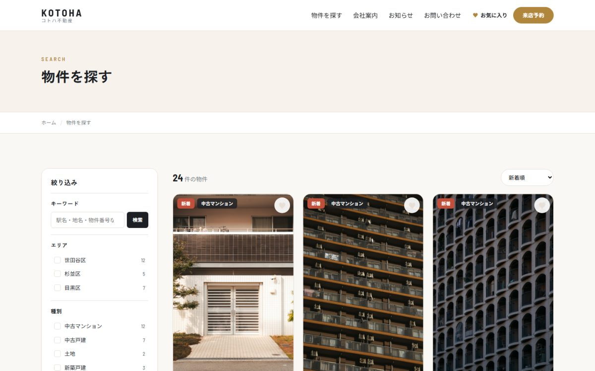
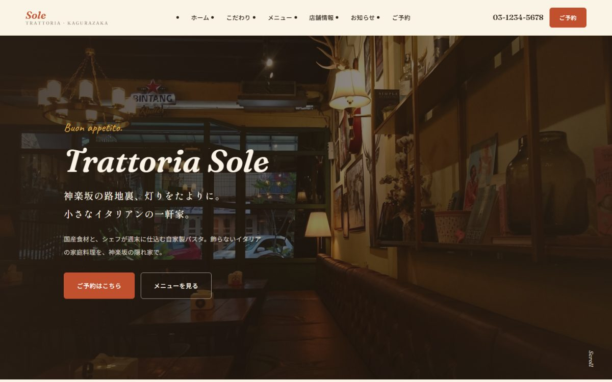
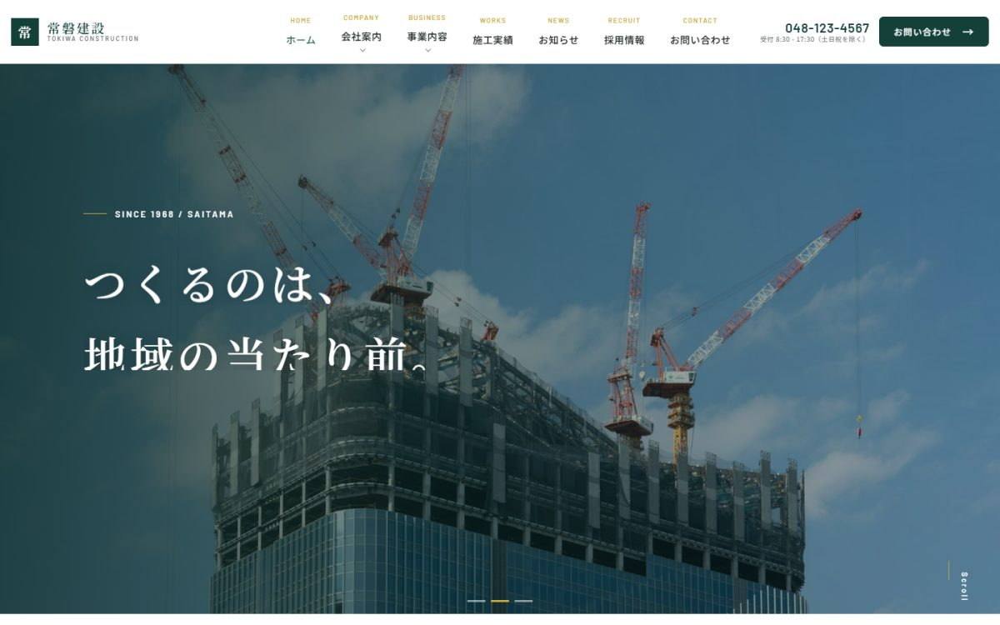
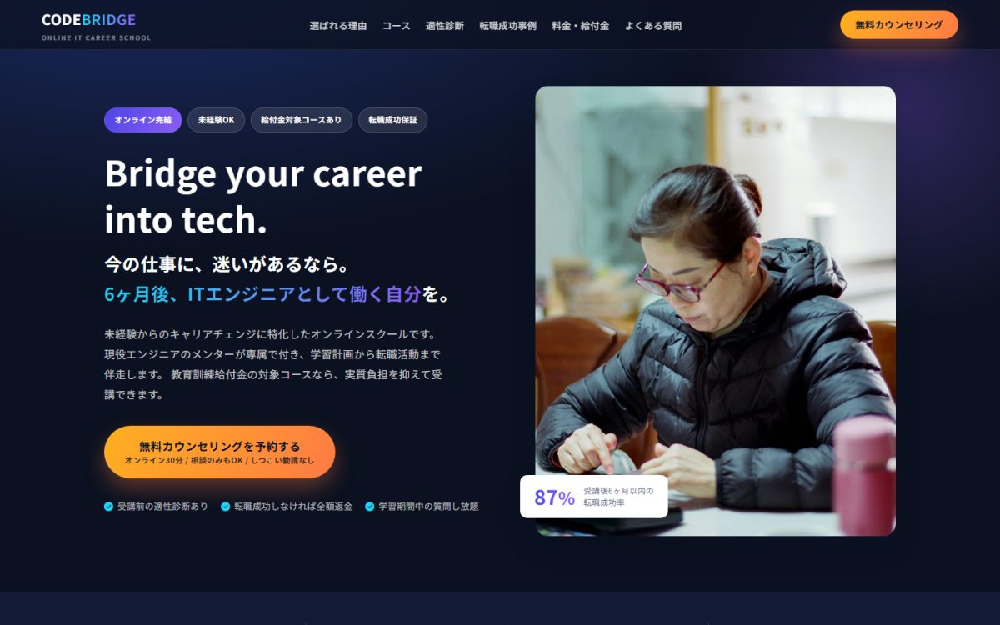

静的サイトの制作
店舗サイト、コーポレートサイト、ランディングページ。デザインから実装まで一人で担当します。 スマートフォンでの表示は、実機幅で確認しながら作っています。
- HTML / CSS（BEM設計）
- JavaScript（フレームワーク不使用）
- レスポンシブ対応
WORKS
すべて架空の店舗・企業を想定した自主制作です。8サイトとも実物を公開しており、その場で触っていただけます。 各ページには「何が難しかったか」「どう解いたか」まで書いています。

検索機能 Next.js
Next.js
不動産（売買）／ フロントエンド刷新
WordPressを管理画面として残したまま、表示側だけをNext.jsで作り直し。同じサーバー・同じDBで表示速度を2〜3倍にしました。

WordPress
コーポレート
LPSKILLS
店舗サイト、コーポレートサイト、ランディングページ。デザインから実装まで一人で担当します。 スマートフォンでの表示は、実機幅で確認しながら作っています。
既製テーマの調整ではなく、テーマをゼロから書き起こします。 クラシックテーマとブロックテーマ（FSE）の両方に対応できます。
WordPressを管理画面として残したまま、表示側だけをNext.jsで作り直す構成に対応します。 編集のしやすさを保ったまま、表示速度を上げられます。
物件検索、求人検索、店舗検索。複数条件の掛け合わせと、選ぶ前に件数が分かる絞り込みUIを実装します。 静的サイトでは作れない部分です。
プラグインに頼らず、入力チェックとスパム対策まで作ります。 エラーで戻ったときに入力が消えないなど、細かい使い勝手も詰めます。
サーバーへの配置、独自ドメインの設定、公開後につまずきやすい箇所の対処まで対応します。
コードにはなぜそう書いたかを日本語で残し、更新手順書もお渡しします。 別の人が引き継げる状態にしてお渡しすることを前提にしています。
FLOW
01
何のためのサイトか、誰に見てほしいかをうかがいます。 「まだ固まっていない」段階でも構いません。要件を一緒に整理するところから始められます。
02
ページ構成と必要な機能を書き出し、金額と期間をお出しします。 この段階で「今回は不要」と判断できるものは削ります。
03
トップページから形にしてお見せします。実際に触れる状態でご確認いただき、 修正しながら進めます。
04
公開前の環境でご確認いただき、問題なければ公開します。 スマートフォンでの表示や表記の揺れも、この段階で確認します。
05
更新手順書をお渡しし、操作の説明をします。 公開後の修正や追加も承ります。
ABOUT
Web制作をしている Youhei と申します。 普段は別の仕事をしており、Web制作は副業として承っています。
もともとは見た目を作るところから入りましたが、 「更新できない」「問い合わせが来ても気づけない」といった、公開したあとで困る部分に関心が移りました。 いまは、デザインと同じくらい仕組みの部分を大事にしています。
掲載している8件はすべて自主制作です。実在の会社ではありませんが、 「この業種ならこの機能が要るはず」と考えながら、実際に動くところまで作っています。 不具合を見つけて直した過程も、各ページに正直に書いています。
CONTACT
制作のご相談やご質問は、GitHubからご連絡ください。
「何から決めればいいか分からない」という段階でも構いません。
※ このサイトは求職・受注のためのポートフォリオです。掲載しているサイトはすべて架空の店舗・企業を想定した自主制作で、実在の団体とは関係ありません。